Breakthroughs in Consensus#
Signatures say who authorized a payment; they cannot say which of two
conflicting payments came first. Consensus mechanisms answer that question by
making some resource scarce: computation, or stake. This chronology traces the
ideas behind blockchainkit.consensus, from the
gambler’s ruin to Casper finality. Each entry has its own experiment in the
gallery.
All snippets use the package’s conventional import: import blockchainkit as bk.
1656 — The gambler’s ruin: catching up from behind#
In plain language. A player who wins each round slightly less often than they lose, and starts some rounds behind, is ever less likely to draw level the further behind they start. An attacker mining a secret chain is that player.
Reading the experiment. q is the attacker’s chance of finding the next block and p = 1 − q the honest network’s; z is how many blocks behind the attacker starts. Simulated races are compared with the formula.
In 1656 Pascal posed to Fermat, and Huygens published the next year, the problem of two gamblers playing until one is ruined. For a walk that steps toward the goal with probability \(q\) and away with \(p = 1 - q\), the chance of ever making up a deficit of \(z\) is
Section 11 of the Bitcoin whitepaper applies this result directly to an attacker racing the honest chain: below half the hashrate, the attacker’s chances fall exponentially with every block of lead.
Implementation: blockchainkit.consensus.systems.catch_up.eventual_catch_up().
Experiment: the gallery example simulates thousands of races for three attacker shares and compares them with \((q/p)^z\).
References: C. Huygens, De ratiociniis in ludo aleae (1657), problem 5; the problem was posed in the Pascal–Fermat correspondence of 1656.
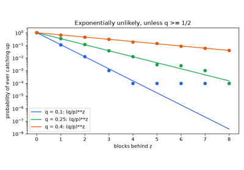
The gambler’s ruin: catching up from behind (Pascal, Fermat and Huygens 1656)
1982 — The Byzantine generals problem#
In plain language. Generals surrounding a city must all attack or all retreat, but some of them are traitors who tell different generals different things. The loyal generals can still agree, but only if fewer than a third of all generals are traitors.
Reading the experiment. General 0 commands; the others are lieutenants. OM(m) is the oral-messages algorithm with m rounds of relaying. IC1 is agreement among the loyal; IC2 says a loyal commander is obeyed.
Lamport, Shostak and Pease gave the problem its name and its answer: with oral (unsigned) messages, agreement despite \(m\) traitors is possible if and only if
Their algorithm OM(\(m\)) has each lieutenant relay the order it received, recursively for \(m\) rounds, and decide by majority. With three generals and one traitor, a loyal lieutenant cannot tell a traitorous commander from a traitorous peer. The \(3f + 1\) bound reappears in every Byzantine fault-tolerant blockchain protocol.
Implementation: blockchainkit.consensus.systems.byzantine.oral_messages()
runs OM(\(m\)) with a configurable traitor strategy.
Experiment: the gallery example checks every traitor position for four generals, shows the three-general failure, and maps which sizes survive one traitor.
References: L. Lamport, R. Shostak, and M. Pease, The Byzantine Generals Problem, ACM Transactions on Programming Languages and Systems 4(3), 382–401 (1982). DOI.
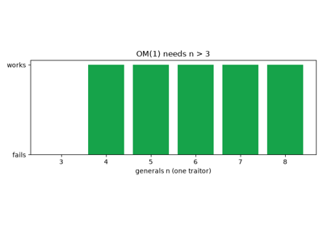
The Byzantine generals problem (Lamport, Shostak and Pease 1982)
1983 — Ben-Or’s randomized consensus#
In plain language. Processes that cannot agree on timing can still agree on a value by occasionally flipping coins. Each round they compare values; when no clear majority exists, they flip, and sooner or later everyone’s coins land the same way.
Reading the experiment. Four processes start split two against two. A scheduler chooses which messages each process hears, trying to keep them split. The histogram shows how many rounds a decision takes.
Michael Ben-Or gave the first asynchronous consensus protocol that tolerates crashes, for \(n > 2f\). In each round, a process proposes \(v\) if it saw a strict majority \(> n/2\) for \(v\); it decides \(v\) after seeing \(f + 1\) proposals of \(v\), adopts \(v\) after seeing one, and otherwise flips a coin. Against any scheduler, termination has probability one; with \(n\) independent coins the expected number of rounds can be exponential in \(n\), which later common-coin protocols reduced to a constant.
Implementation: blockchainkit.consensus.systems.randomized.ben_or(), with
an adversarial or random message scheduler.
Experiment: the gallery example decides against the adversarial scheduler and plots the distribution of rounds.
References: M. Ben-Or, Another Advantage of Free Choice: Completely Asynchronous Agreement Protocols, PODC ‘83, 27–30 (1983). DOI.
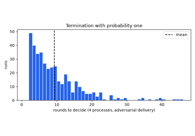
Randomized consensus: agreeing by flipping coins (Ben-Or 1983)
1985 — FLP: no deterministic consensus in an asynchronous network#
In plain language. If messages can be delayed arbitrarily and even one process might crash, no fixed, coin-free recipe can guarantee that everyone eventually agrees. An adversary who only chooses the order of delivery can keep the system undecided forever.
Reading the experiment. The same protocol runs twice against the same scheduler: once with a fixed rule in place of the coin, once with real coins.
Fischer, Lynch and Paterson proved that every deterministic protocol has an admissible schedule, with at most one crash, in which it never decides. The proof finds a bivalent configuration, one from which both decisions are still reachable, and shows the adversary can always deliver the next message so as to stay bivalent. Every practical consensus protocol escapes by weakening an assumption: randomization (Ben-Or), partial synchrony (Dwork, Lynch and Stockmeyer), or probabilistic finality (Nakamoto).
Implementation: blockchainkit.consensus.systems.randomized.ben_or() with
a deterministic coin shows one such stalling schedule.
Experiment: the gallery example stalls a deterministic variant for 500 rounds and lets a randomized one decide under the same schedule.
References: M. J. Fischer, N. A. Lynch, and M. S. Paterson, Impossibility of Distributed Consensus with One Faulty Process, Journal of the ACM 32(2), 374–382 (1985). DOI.
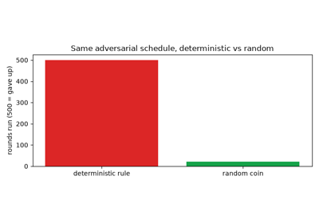
FLP: no deterministic consensus in an asynchronous network (1985)
1988 — Partial synchrony: progress after an unknown stabilization time#
In plain language. Networks are usually fast, sometimes slow. Assume only that they become well-behaved at some unknown moment. A protocol that stays safe all the time, and waits each leader out with a timeout that doubles after every failure, will eventually give a leader enough time.
Reading the experiment. GST is the global stabilization time, after which every message arrives within Δ. A view is one leader’s turn; it succeeds when it starts after GST and its timeout is at least Δ.
Dwork, Lynch and Stockmeyer introduced partially synchronous models in which delay bounds exist but are unknown, or hold only after an unknown GST, and showed consensus is then solvable for \(n \ge 3f + 1\) Byzantine faults. With timeouts \(T_v = T_0\,2^{v}\),
so progress is guaranteed without knowing Δ. PBFT, Tendermint and HotStuff all assume this model.
Implementation: blockchainkit.consensus.systems.synchrony.view_changes().
Experiment: the gallery example finds the first successful view, shows a fixed timeout below Δ never succeeding, and plots decision time against GST.
References: C. Dwork, N. Lynch, and L. Stockmeyer, Consensus in the Presence of Partial Synchrony, Journal of the ACM 35(2), 288–323 (1988). DOI.
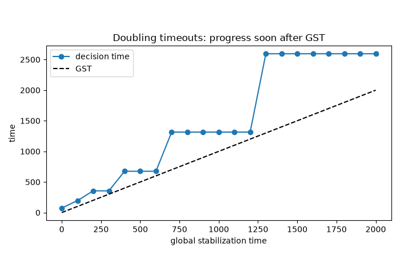
Partial synchrony: timeouts that eventually work (Dwork, Lynch and Stockmeyer 1988)
1992 — Pricing via processing#
In plain language. Make every email cost its sender a little computation: too little to bother an ordinary user, too much for someone sending millions. The recipient must be able to check the payment instantly.
Reading the experiment. The puzzle is a square root modulo a prime \(p\). The sender’s work grows with the size of \(p\); the recipient’s check is one multiplication.
Dwork and Naor proposed pricing functions: moderately hard to compute, easy to verify, and with no amortization across messages. One of their examples is the modular square root, for \(p \equiv 3 \pmod 4\):
The asymmetry is only logarithmic, which is why later designs moved to puzzles with tunable, exponential cost. The idea of attaching verifiable computational cost is the root of proof of work.
Implementation: blockchainkit.consensus.systems.pricing.modular_square_root()
counts its multiplications.
Experiment: the gallery example prices a message and plots computing against checking cost.
References: C. Dwork and M. Naor, Pricing via Processing or Combatting Junk Mail, CRYPTO ‘92, LNCS 740, 139–147 (1993). DOI.
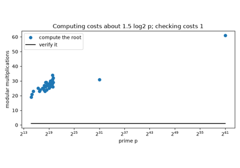
Pricing via processing: making junk mail expensive (Dwork and Naor 1992)
1997–2002 — Hashcash and proofs of computational effort#
In plain language. Make someone search for a rare hash result, then check their answer with one hash calculation. Searching can take many attempts even though checking the finished result is quick.
Reading the experiment. Difficulty d sets the rarity. The probability of success on each trial is 1 divided by 2 to the power d; the expected number of trials T is 2 to the power d. At difficulty 5 that means 32 attempts on average, not a guarantee of success within 32.
Back’s Hashcash proposal used a computational puzzle to impose a cost on requests while keeping verification cheap; the 2002 paper describes the construction. A sender varies a nonce until a hash meets a target.
Implementation: blockchainkit.consensus.systems.pow.mine() searches a bounded
nonce interval; blockchainkit.consensus.systems.pow.valid_pow() checks one hash.
The header encoding is blockchainkit’s, not a Hashcash token format.
Teaching vs production
Difficulty here is a count of leading zero bits of SHA-256 over this package’s header. Bitcoin compares double SHA-256 of an 80-byte header with a full 256-bit target. See Exact conventions and model boundaries for this package’s exact conventions.
Experiment: Hashcash: proof of work you can verify in one hash (Back 1997) compares measured trial
counts with the expected exponential cost. Search is random-looking, so a
mean is not a deadline. An exhausted attempt budget raises TimeoutError.
Computational effort becomes a consensus ingredient only when combined with
validation rules, a network, and a rule for comparing histories.
References: A. Back, Hashcash — A Denial of Service Counter-Measure (2002), describing the earlier 1997 proposal. Author’s paper.
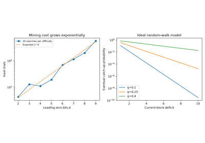
Hashcash: proof of work you can verify in one hash (Back 1997)
1999 — Practical Byzantine Fault Tolerance#
In plain language. A group of servers keeps one consistent log even if up to a third of them lie, by voting in two rounds and only acting on votes from more than two thirds of the group. Any two such supermajorities share an honest member.
Reading the experiment. n replicas tolerate f faults when n = 3f + 1. A replica prepares after 2f matching prepare votes and commits after 2f + 1 matching commit votes. The leader may equivocate.
Castro and Liskov made Byzantine fault tolerance practical, with a three-phase protocol (pre-prepare, prepare, commit) and view changes for faulty leaders. Its safety rests on quorum intersection:
so two quorums share at least one honest replica, who never votes for two values in one view. With more than \(f\) faults that guarantee disappears. Tendermint, HotStuff and many proof-of-stake chains descend from PBFT.
Implementation: blockchainkit.consensus.systems.pbft.pbft_round() runs the
normal-case exchange; blockchainkit.consensus.systems.pbft.quorum_size().
Teaching vs production
pbft_round runs one round with a fixed leader and synchronous delivery. It
has no view changes, checkpoints, request batching or message authentication.
See Exact conventions and model boundaries for this package’s exact conventions.
Experiment: the gallery example stays safe under an equivocating leader with one fault among four, breaks with two, and plots quorum overlap.
References: M. Castro and B. Liskov, Practical Byzantine Fault Tolerance, 3rd Symposium on Operating Systems Design and Implementation (OSDI), 173–186 (1999).
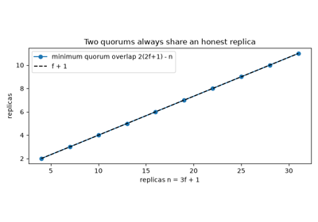
Practical Byzantine Fault Tolerance (Castro and Liskov 1999)
2008–2009 — Bitcoin combines the ingredients#
In plain language. Alice could sign two payments that each spend her entire balance. Both signatures could be valid, but both payments cannot be accepted together. Bitcoin combined earlier tools into rules for ordering payments across a network.
Reading the experiment. Follow the balances as a competing history wins. A payment can leave the selected history even though its signature and its membership proof for the old block remain valid. This package uses account balances; Bitcoin instead tracks individual unspent transaction outputs (UTXOs).
Nakamoto’s 2008 proposal combined signatures, hash-linked blocks, proof of work, and peer-to-peer dissemination into an electronic cash design. The key systems question is double spending: two individually authorized payments may conflict, so participants need a shared ordering rule.
Implementation: blockchainkit.structures.systems.chain.Blockchain validates
account transfers and selects greatest cumulative work. Each fork retains its
own blockchainkit.structures.systems.ledger.Ledger, so a reorganization also
restores the appropriate balances and account nonces. Difficulty is fixed by
genesis; this model does not implement Bitcoin’s adjustment schedule or UTXOs.
Teaching vs production
Blocks here have no coinbase reward or fees, no scripts, and no peer-to-peer protocol; fork choice by cumulative work is the part reproduced. See Exact conventions and model boundaries for this package’s exact conventions.
Experiment: Nakamoto consensus: a payment, a fork, and a reorganization (2008) mines and gossips a signed payment, then removes its confirmation when a competing fork wins. The payment’s signature and original Merkle proof still verify. Cryptographic validity, inclusion, and finality are three different properties.
Equal-work ties use a deterministic hash ordering for reproducible experiments. No finite confirmation count is presented as unconditional finality.
References: S. Nakamoto, Bitcoin: A Peer-to-Peer Electronic Cash System (2008). Original announcement; paper.
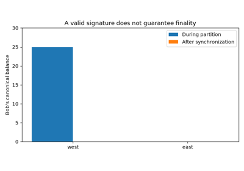
Nakamoto consensus: a payment, a fork, and a reorganization (2008)
2008 — How many confirmations? Nakamoto’s double-spend calculation#
In plain language. A merchant who waits for more blocks on top of a payment is safer, because an attacker must secretly build a longer chain. How much safer can be calculated exactly, and the risk falls exponentially with each block.
Reading the experiment. z is the number of confirmations the merchant waits for; q the attacker’s share of hashrate. The curve is the whitepaper’s formula, the dots a simulated race.
Section 11 of the whitepaper models the attacker’s progress during the \(z\) honest blocks as Poisson with mean \(\lambda = zq/p\), and applies the gambler’s ruin from each possible position:
The whitepaper tabulates \(P\) (for example 0.0009137 at \(q = 0.1\), \(z = 5\)) and the \(z\) needed for \(P < 0.1\%\). Later work refined the model (Rosenfeld 2014; Grunspan and Pérez-Marco 2017), but the exponential decay remains.
Implementation: blockchainkit.consensus.systems.catch_up.attacker_success_probability()
reproduces the whitepaper’s table.
Experiment: the gallery example checks the table and compares the formula with a Monte-Carlo race for two attacker shares.
References: S. Nakamoto, Bitcoin: A Peer-to-Peer Electronic Cash System (2008), section 11. Paper.
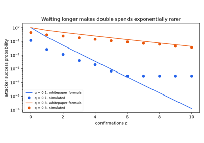
How many confirmations? Nakamoto’s double-spend calculation (2008)
2009 — Difficulty retargeting#
In plain language. If more miners join, blocks come faster. Bitcoin measures how long the last batch of blocks took and adjusts the puzzle so blocks return to about ten minutes.
Reading the experiment. The target is the threshold a block hash must not exceed; a larger target is easier. Every window of blocks it is scaled by actual over expected time.
The whitepaper says the difficulty is set by a moving average targeting an average number of blocks per hour. Bitcoin’s first release (January 2009) retargets every 2016 blocks:
The clamp limits manipulation and shocks. Retargeting turns proof of work into a clock, and is also what lets selfish mining become profitable in absolute terms.
Implementation: blockchainkit.consensus.systems.difficulty.retarget() and
blockchainkit.consensus.systems.difficulty.simulate_difficulty().
Teaching vs production
retarget uses Bitcoin’s factor-of-four clamp, but on an integer target in a
simulation with fixed hashrates; it does not reproduce the off-by-one in
Bitcoin’s interval count. See Exact conventions and model boundaries for this package’s exact
conventions.
Experiment: the gallery example quadruples and then halves the hashrate and watches the block interval return to ten minutes.
References: S. Nakamoto, Bitcoin: A Peer-to-Peer Electronic Cash System
(2008), section 4; Bitcoin v0.1 source code (2009), GetNextWorkRequired.
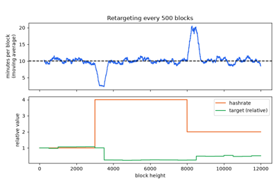
Difficulty retargeting: keeping ten-minute blocks (Bitcoin 2009)
2012 — Stake as an alternative participation weight#
In plain language. A weighted lottery can give someone with twice as much stake twice the chance of being selected. This demonstrates one building block used in some consensus designs, rather than a whole agreement process.
Reading the experiment. The weight w for participant i is divided by the sum of everybody’s weights. Weights 1 and 3 give probabilities one quarter and three quarters. Repeated draws approach those proportions without guaranteeing them in a short run. PRNG means pseudorandom number generator.
King and Nadal’s Peercoin proposal explored proof of stake alongside proof of work. The broader design question is how participants earn influence over proposing or confirming state changes without weighting every decision by newly performed computation.
Implementation: blockchainkit.consensus.systems.pos.StakeSampler isolates
a simple stake-proportional lottery:
Teaching vs production
StakeSampler draws proposers from a fixed seed. Deployed protocols derive
randomness with RANDAO or verifiable random functions, and must resist
validators grinding it. See Exact conventions and model boundaries for this package’s exact
conventions.
It samples integer weights without floating-point rounding and uses a private, seeded PRNG for reproducible experiments. This is not Peercoin’s protocol and does not model coin age, voting, slashing, finality, or an unbiasable beacon.
Experiment: Proof of stake: a stake-weighted proposer lottery (Peercoin 2012) compares observed proposer frequencies to stake fractions. Splitting one stake across many names preserves its combined expected weight. Fair proposer sampling alone does not resolve equivocation or competing chains; those require additional protocol rules.
References: S. King and S. Nadal, PPCoin: Peer-to-Peer Crypto-Currency with Proof-of-Stake (2012). Project paper.
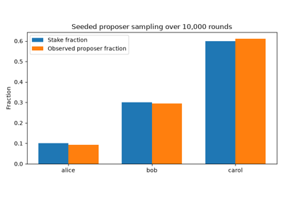
Proof of stake: a stake-weighted proposer lottery (Peercoin 2012)
2013 — GHOST: the heaviest observed subtree#
In plain language. When blocks are frequent, honest miners often build on the same parent at once, and the longest-chain rule throws their extra blocks away. GHOST counts that discarded honest work when choosing between forks.
Reading the experiment. Branch A is a single chain of three blocks; branch B is one block with three children. Subtree work counts a block and all its descendants.
Sompolinsky and Zohar showed that at high block rates the longest chain’s security degrades, because honest blocks off the main chain no longer protect it. GHOST descends from genesis, at each fork choosing
Ethereum’s proof-of-work chain used a variant with uncle rewards, and LMD-GHOST became the fork-choice rule of Ethereum’s proof of stake.
Implementation: blockchainkit.consensus.systems.fork_choice.ghost_tip()
and blockchainkit.consensus.systems.fork_choice.subtree_work().
Teaching vs production
ghost_tip applies GHOST to a static block tree. Ethereum’s proof-of-work
chain rewarded uncles but kept heaviest-chain selection; a GHOST variant (LMD-
GHOST) became its fork choice only with proof of stake. See Exact conventions and model boundaries
for this package’s exact conventions.
Experiment: the gallery example builds a fork where the longest chain and GHOST disagree and draws the block tree.
References: Y. Sompolinsky and A. Zohar, Secure High-Rate Transaction Processing in Bitcoin, Financial Cryptography 2015, LNCS 8975, 507–527 (2015); preprint IACR ePrint 2013/881. DOI.
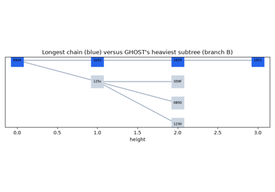
GHOST: follow the heaviest subtree (Sompolinsky and Zohar 2013)
2014 — Nothing at stake, and slashing#
In plain language. Proof-of-work miners must spend electricity on one fork or another. Proof-of-stake validators can sign every fork for free, so they have no reason to choose, and forks never settle. The fix is to confiscate the deposit of anyone caught signing two conflicting blocks.
Reading the experiment. Fork A wins with probability 0.6. The payoff of voting for A, for B, or for both is plotted as the penalty for double-signing grows.
In early 2014 the “nothing at stake” objection was raised against proof of stake. Buterin’s Slasher proposal answered with penalties: evidence of two signatures at the same height destroys a deposit. With reward \(R\), fork probability \(p_A\), and penalty \(S\),
so honest voting is the best response once \(S > (1 - p_A) R\). Slashing is now part of every major proof-of-stake protocol; its limit is the long-range attack by keys whose deposits were already withdrawn.
Implementation: blockchainkit.consensus.systems.stake_games.fork_voting_payoffs().
Teaching vs production
fork_voting_payoffs is a payoff table, not a protocol. Real slashing needs
on-chain evidence, deposits that are still locked, and rules against long-range
attacks. See Exact conventions and model boundaries for this package’s exact conventions.
Experiment: the gallery example plots the three strategies’ payoffs against the penalty.
References: V. Buterin, Slasher: A Punitive Proof-of-Stake Algorithm, Ethereum blog (January 2014). Post.
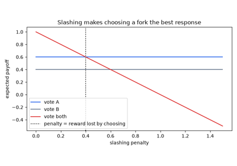
Nothing at stake: why proof of stake needs penalties (Buterin 2014)
2014 — Selfish mining: majority is not enough#
In plain language. A large mining pool can earn more than its fair share by hiding the blocks it finds and releasing them just in time to make honest miners’ blocks worthless. Honest miners then gain by joining the pool.
Reading the experiment. α is the pool’s share of hashrate; γ is the share of honest miners who build on the pool’s block when two blocks tie. Revenue is the pool’s share of blocks in the final chain.
Eyal and Sirer modelled the strategy as a Markov chain on the pool’s private lead and derived its relative revenue:
which exceeds \(\alpha\) whenever \(\alpha > (1-\gamma)/(3-2\gamma)\): a third of the hashrate when ties go to honest blocks, and any share when the pool wins every tie. Bitcoin’s incentive argument therefore needs more than an honest majority.
Implementation: blockchainkit.consensus.systems.selfish.selfish_mining_revenue(),
blockchainkit.consensus.systems.selfish.selfish_mining_threshold(), and the
state-machine simulation
blockchainkit.consensus.systems.selfish.simulate_selfish_mining().
Teaching vs production
The simulation follows Eyal and Sirer’s idealized model: propagation is instant apart from the tie-breaking share gamma, and difficulty does not adjust. See Exact conventions and model boundaries for this package’s exact conventions.
Experiment: the gallery example plots revenue against hashrate for three values of γ, with simulations on the curves.
References: I. Eyal and E. G. Sirer, Majority Is Not Enough: Bitcoin Mining Is Vulnerable, Financial Cryptography 2014, LNCS 8437, 436–454 (2014). DOI.
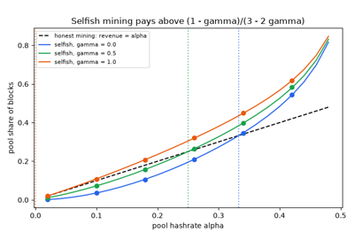
Selfish mining: majority is not enough (Eyal and Sirer 2014)
2017 — Casper FFG: finality from two-thirds votes#
In plain language. Validators vote to make checkpoints of the chain permanent. Once two thirds of the stake vote for a checkpoint and then for its successor, the checkpoint is final: reverting it would require at least a third of all stake to break rules that are detected and punished.
Reading the experiment. A vote is a link from a source checkpoint to a target. Justified checkpoints have a two-thirds link from a justified source; a justified checkpoint is finalized when its direct child is justified. Offenses are detected by comparing a validator’s votes.
Buterin and Griffith’s Casper the Friendly Finality Gadget overlays finality on any block-proposal mechanism. Its two slashing conditions forbid, for one validator,
They prove accountable safety: two conflicting finalized checkpoints imply that validators with at least a third of the stake violated a condition. Ethereum’s proof of stake combines Casper FFG with LMD-GHOST.
Implementation: blockchainkit.consensus.systems.finality.FinalityGadget
tracks justification, finality and offenses.
Teaching vs production
FinalityGadget checks votes on a given checkpoint tree with a fixed
validator set; it has no deposits, rewards, inactivity leak or fork choice. See
Exact conventions and model boundaries for this package’s exact conventions.
Experiment: the gallery example finalizes checkpoints, lets one height miss its quorum, and catches a double vote and a surround vote.
References: V. Buterin and V. Griffith, Casper the Friendly Finality Gadget, arXiv:1710.09437 (2017). Preprint.
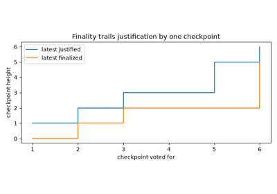
Casper FFG: finality by two-thirds votes and slashing (Buterin and Griffith 2017)
2017 — Cryptographic sortition#
In plain language. Each round, pick a small committee by a lottery in which every coin is a ticket, so richer participants hold more tickets. Each participant checks their own tickets privately, so nobody knows who is on the committee until its members speak, and attacking them in advance is impossible.
Reading the experiment. τ is the expected committee size and W the total stake. Each user’s seats are drawn from a binomial distribution with their stake as the number of trials.
Gilad, Hemo, Micali, Vlachos and Zeldovich built Algorand around cryptographic sortition: a user with stake \(w\) evaluates a verifiable random function on the round seed, and reads off \(j\) selected sub-users with
Because the binomial is additive, splitting stake across accounts leaves expected seats unchanged: there is no Sybil advantage.
Implementation: blockchainkit.consensus.systems.sortition.sortition(). As a
teaching simplification, a hash of a secret replaces the verifiable random
function.
Teaching vs production
A hash of the user’s secret replaces Algorand’s verifiable random function, so others cannot check a claimed draw. See Exact conventions and model boundaries for this package’s exact conventions.
Experiment: the gallery example runs 300 rounds, compares seats with stake, splits one account into ten, and plots committee sizes.
References: Y. Gilad, R. Hemo, S. Micali, G. Vlachos, and N. Zeldovich, Algorand: Scaling Byzantine Agreements for Cryptocurrencies, 26th Symposium on Operating Systems Principles (SOSP), 51–68 (2017). DOI.
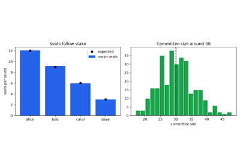
Cryptographic sortition: a secret, stake-weighted committee (Algorand 2017)